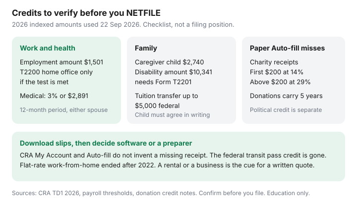

Personal Finance · Canada
Canadian Tax Credits and Deductions Middle-Aged Households Often Miss (Educational Checklist)
Middle-aged households lose refunds in the cracks between a T4 and a life: a parent who moved in, a year of physio, a donation receipt in a kitchen drawer, an adult child’s tuition, a work-from-home year nobody documented. Certified software will claim what you type. It will not invent the receipt. This is a checklist of federal amounts people in that season often skip, with 2026 figures date-stamped 22 Sep 2026. It is not a filing position and it is not a promise that every line applies to you.
When the return is a straight T4, the software versus accountant guide is the cost decision. When you need the slips CRA already has, start with CRA My Account. Québec files a separate provincial return. Provincial credits differ; the federal list below is the common miss, not your whole notice of assessment.
Disclosure: Tax software is an offer type. Saving Optimizer may later add partner links. We do not currently claim software or preparer partnerships. This is education, not tax, legal, or accounting advice. Confirm every amount in certified software or with a preparer before you file. Indexation and credit rates can be legislated after a guide is drafted.
Key takeaways
- 2026 federal indexing is 2.0%. Basic personal amount up to $16,452. Canada employment amount $1,501. The lowest federal rate on CRA’s 2026 payroll tables is 14%.
- Medical expenses: the lesser of 3% of net income and $2,891. Pick the 12-month window and the spouse that clears the threshold. Do not claim bills a plan already reimbursed.
- The temporary flat-rate work-from-home method is not available after 2022. A claim needs the detailed method and the employer condition, usually Form T2200. The old federal transit pass credit is gone.
- Charitable gifts: federal credit 14% on the first $200 and 29% above that (33% to the extent of income in the top bracket, which starts at $258,482 in 2026). Unused gifts can carry forward five years. Federal political contributions are a different credit, max $650.
- Auto-fill does not contain every receipt. Download the slips, then decide software versus a preparer using the cost guide — a rental or a business is the usual reason to pay for a written quote.
Work from home, employment expenses, and medical bills to verify
If you had employment income, the Canada employment amount for 2026 is $1,501 (CRA payroll tables and the indexed credit lists used 22 Sep 2026). Software usually claims it when a T4 is present. The miss is assuming a bigger employment-expense claim comes with it. Union and professional dues that appear on the T4 are one line. Tools, supplies, and a home office are another, and they are allowed only when the employment-expense rules are met.
For 2023 and later tax years, CRA’s temporary flat-rate work-from-home method is not available. You cannot claim $2 a day because you felt like you worked from the kitchen. The detailed method asks whether you were required to work from home, or whether you had an agreement that you would, and whether you have Form T2200 (or the shorter T2200S where the employer still uses it) declaring the conditions. You then claim a reasonable share of eligible expenses. A voluntary arrangement your employer will not put on a T2200 is not a claim. Employees who split the year between office and home should match the form to the weeks the form actually covers.
There is no federal public transit tax credit to revive. It was eliminated for 2017 and subsequent years. A provincial credit, if your province still has one, lives on the provincial schedule. Do not type a Presto or Compass total onto a federal line because a blog from 2016 said to.
Medical expenses are the large middle-aged miss: dentistry, prescriptions, glasses, physio, and some attendant care, above the lesser of 3% of net income and the 2026 ceiling of $2,891. You may claim a 12-month period ending in the tax year, which is how a cluster of bills that straddles December becomes one claim instead of two failed ones. Either spouse can claim. Run the threshold both ways. Subtract what an employer plan reimbursed; the unreimbursed part is the candidate. Premiums you paid to a private health plan can belong on the medical line when they meet CRA’s test — employer-paid premiums that were not a taxable benefit generally do not. The benefits checklist is how you avoid claiming a bill twice.

Family caregiving and disability-related amounts
These amounts are high-level on purpose. They depend on infirmity, income tests, and who else is claiming the person. The 2026 Form TD1, read 22 Sep 2026, states a Canada caregiver amount of $2,740 for an infirm child under 18. One parent claims it. The same TD1 uses a net-income figure of $29,374 in the spouse, eligible-dependant, and other-caregiver calculations. The caregiver amount for other infirm dependants 18 or older is built from a base in that neighbourhood (indexed lists put the 2026 base near $8,773) and is reduced by the dependant’s income. Do not add $8,773 because a parent lives with you. Add it only when the dependant is infirm, the income test passes, and nobody else has claimed the same support.
The disability tax credit starts with Form T2201, certified by a medical practitioner, and CRA’s approval. The 2026 disability amount on indexed lists used for this draft is $10,341. There is a supplement for a child. Approval can transfer to a supporting person when the person with the disability does not need the whole credit. A rejected T2201 is not fixed by claiming the amount anyway. Processing takes time; start it in the year the condition exists, not in April of a later year, if you want that year’s return to carry it.
An adult child’s tuition can be transferred federally up to $5,000 of the tuition amount, after the student uses what they need to reduce their own tax to zero, and only if the student designates the transfer. Unused tuition the student does not transfer can carry forward on the student’s own return. Parents who pay the bill and never see the T2202 leave both the transfer and the carry-forward unused. Childcare expenses are a deduction, claimed by the lower-income spouse in the usual case, and they are not the same line as the Canada caregiver amount.
| Item | 2026 figure used here | What people skip |
|---|---|---|
| Basic personal amount | Up to $16,452 (lower if income is over $181,440) | Assuming the maximum when income is in the top clawback range |
| Canada employment amount | $1,501 | Confusing it with a home-office claim |
| Medical threshold | Lesser of 3% of net income or $2,891 | Using the calendar year when a different 12-month window clears |
| Disability amount | $10,341, after an approved T2201 | Claiming without approval, or failing to transfer unused credit |
| Caregiver, infirm child under 18 | $2,740 | Both parents claiming, or claiming for a child who is not infirm |
| Federal donation credit | 14% on the first $200; 29% above (33% against top-bracket income) | Splitting a couple’s gifts so both pay the low rate on the first $200 |
Charitable and political donation basics
Federal charitable gifts in 2026 take a two-rate credit. The first $200 of gifts claimed uses the lowest personal rate, 14% for 2026. Amounts above $200 use 29%, and a slice can use 33% when you have taxable income in the top bracket (threshold $258,482 on CRA’s 2026 payroll tables). Provinces add their own rates. Ontario’s pattern, on the same secondary tables used 22 Sep 2026, is 5.05% on the first $200 and 11.16% above. A couple should usually pool gifts on one return so only one $200 sits at the low rate. Gifts above the annual claim limit can carry forward five years. A missed carry-forward from 2021 is in its last year on a 2026 return — check the prior notice of assessment, not your memory.
Official receipts only. A crowdfunding transfer without a charity receipt is not a gift. Payroll giving still needs the receipt or the T4 reporting your employer provides. First-time donors do not get a special extra federal rate in current rules; ignore a screenshot that says otherwise unless CRA’s page for that year shows it.
Political contributions are not charitable gifts. The federal political contribution tax credit, unchanged in structure on CRA’s description: 75% of the first $400, 50% of the next $350, and 33 1/3% of the next $525, to a maximum credit of $650 once contributions reach $1,275. You claim it in the year you paid. It does not carry forward. It must be a registered federal party, association, or candidate. Provincial political credits are separate; Ontario’s is refundable and has its own cap. A charitable receipt and a political receipt in the same envelope are two lines, not one.
Carrying charges and prior-year unused amounts
Interest you paid on money borrowed to earn investment income can be a carrying charge (line 22100 is the usual federal home) when the use-of-funds test is met. Interest on money borrowed to contribute to an RRSP or TFSA is the classic amount that is not deductible. Investment counsel fees have their own narrow rules. If you cannot point at the borrowed dollars and the taxable income they were meant to produce, do not guess. This page will not design a leveraged-investing story.
Prior-year leftovers that software forgets when you switch products: charitable carry-forwards, student tuition carry-forwards, capital losses, and RRSP deduction room you chose not to claim. The notice of assessment and My Account are the record. RRSP room is not a credit you “missed”; it is a limit. The timing guide is RRSP contribution timing. Moving expenses are a deduction when you moved at least 40 kilometres closer to a new work or school location and you have the receipts. Northern-resident deductions, the home accessibility credit, and a multigenerational renovation credit exist and are easy to over-claim. Read the form’s questions. Do not add them because a headline said “renovation.”
Pension income splitting and the $2,000 pension income amount matter when a pension or a RRIF has started, including for some people in their 60s. Eligible pension income is defined. A TFSA withdrawal is not eligible pension income. If one spouse is 65 and the other is not, whose slip qualifies is a software interview, not a guess.
CRA My Account slips to download before you file
Auto-fill inserts what CRA holds on the day you ask. Download or review, at least:
- T4, T4A, T5, T3, and any T4E or T4RSP that the year actually had.
- RRSP receipts, including the first 60 days of the next calendar year, which can belong on this return.
- FHSA activity if you contributed. The plan administrator’s slip and My Account should agree before you claim the deduction.
- Tuition (T2202) and any carry-forward shown on the latest notice of assessment.
- The instalments CRA thinks you owe, so you do not pay them twice or not at all.
Charitable receipts, medical invoices, childcare, and moving costs are usually absent. So is a correct adjusted cost base for investments you sold in a non-registered account. A T5008 is not an ACB. If you do not know the ACB, that is the moment to slow down, as the software guide already says.
When software is enough and when a preparer is worth it
Software is the default for employment income, a pension slip, RRSP and FHSA receipts you have tracked, donations, medical totals you added up, and a tuition transfer the student designated. NETFILE for the relevant years was open from 23 February 2026 through 29 January 2027 on the software guide’s CRA date stamp. A preparer earns a written quote when there is a rental suite, self-employment, a move with a partial-year residency question, a disability application still in process, or an investment sale whose cost base you cannot support. Paying a preparer to type five T4s is the other miss. The decision table is already written; use it instead of buying reassurance.
Whichever path you use, tick this page’s list once, keep the receipts for the period CRA can reassess, and do not pay a “refund recovery” firm to claim credits you can type yourself.
Sources & date stamps
- CRA, 2026 payroll tables and Form TD1 (2026) — indexing 2.0%; brackets including $58,523, $117,045, $181,440, $258,482; lowest rate 14%; basic personal amount up to $16,452; caregiver child amount $2,740; income figure $29,374 (read 22 Sep 2026).
- Indexed non-refundable amounts used 22 Sep 2026 from CRA-aligned compilations: Canada employment amount $1,501; medical expense ceiling $2,891; disability amount $10,341. Confirm on CRA’s indexation chart before filing.
- Donation credit: first $200 at the lowest rate (14% for 2026); 29% above; 33% to the extent of top-bracket income. Five-year carry-forward.
- CRA, federal political contributions — 75% / 50% / 33 1/3%, maximum credit $650 at $1,275. No carry-forward.
- CRA, home office expenses — temporary flat-rate method ended for years after 2022. Federal transit pass amount ended for 2017 and later years.
- Saving Optimizer — tax software versus accountant; CRA My Account setup.
Frequently asked questions
Can I still claim the flat-rate work-from-home amount?
Not for years after 2022. CRA’s temporary flat-rate method ended. A later year uses the detailed method, and only when the employment conditions are met, usually with Form T2200 from your employer. Choosing to work from home without that condition is not a claim.
What is the 2026 medical expense threshold?
The lesser of 3% of net income and $2,891, on indexed figures used 22 Sep 2026. You can choose a 12-month period ending in the tax year, and either spouse can claim. Do not include amounts a health plan already reimbursed. Confirm the ceiling on CRA’s indexation chart before you file.
Should spouses split charitable donations?
Usually pool them on one return. For 2026 the federal credit is 14% on the first $200 and 29% above that (33% to the extent you have income in the top bracket, which starts at $258,482). Two separate $200 claims both sit at the low rate. Unused gifts can carry forward five years.
Is the federal political contribution credit the same as a charitable gift?
No. Federal political contributions use 75% on the first $400, 50% on the next $350, and 33 1/3% on the next $525, to a maximum credit of $650. The credit does not carry forward. Provincial political credits are a separate line.
Will Auto-fill catch a missed tuition transfer or donation?
Only if CRA already has the slip and you still review it. Charitable receipts, medical invoices, and a student’s designation of a tuition transfer are the usual gaps. The federal tuition transfer is capped at $5,000 and needs the student to agree.